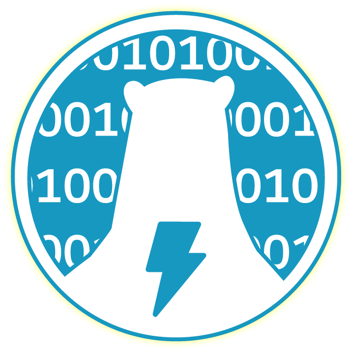
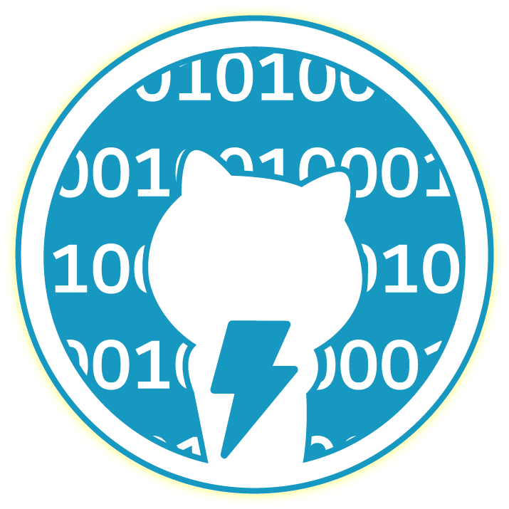
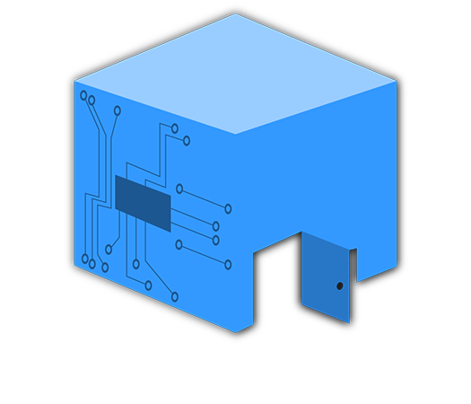

Salesforce Summer '19
 
At Salesforce during the summer of 2019 i was asked to redesign an internal team logo for the Platform Solution Engineering team. Using Adobe Illustrator and the SF graphics kit for inspiration, I went through the entire design process during this project. I began with many iterative logos that had small differences and narrowed it down to a select few and from those few the whole platform team voted and decided on one logo. However once the team decided on a logo one of the team members pointed out that the winning logo wasn’t gender neutral so i made some quick edits and the final product is an on-brand gender neutral logo utilizing our mascots for the PTS team.
- Charles
Beyond Your Doors Work

Not too long ago a friend approached me asking for my help developing a logo for the startup company he worked for. After several sessions of tweaking we were able to finish with this logo incorporating wiring and microchip pieces along the wall of a simple building.
- Charles